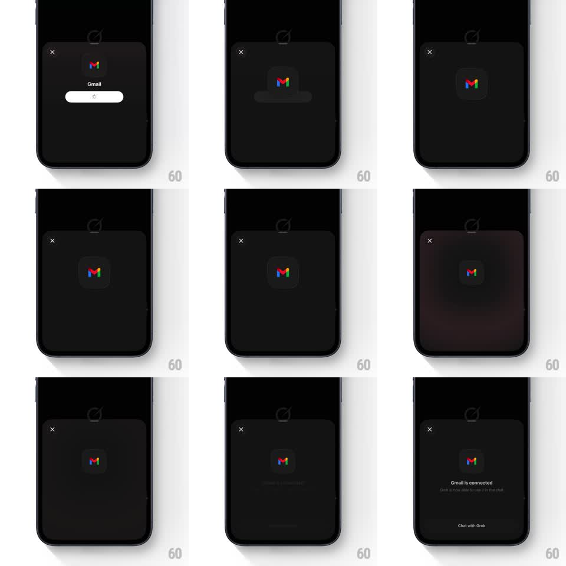

Media
Frame-by-frame

Rebuild this animation 1:1: Grok's app-connected modal - the Gmail icon sits center on a dark sheet while a deep red halo pulses behind it through the OAuth wait, then resolves into the "Gmail is connected" state with staggered text and a Chat with Grok button.

Rebuild this animation 1:1: Grok's app-connected modal - the Gmail icon sits center on a dark sheet while a deep red halo pulses behind it through the OAuth wait, then resolves into the "Gmail is connected" state with staggered text and a Chat with Grok button. ## Integration Integration: stack-agnostic spec - springs given as stiffness/damping, timed motions as duration + curve; map every value to your framework and animation library of choice. ## Scene Dark modal sheet over the Grok app: close X top-left, centered app icon (Gmail) on a rounded dark tile. Connecting state: a "Gmail" label and a pill progress bar under the icon. Success state: "Gmail is connected" headline, subcopy, and a "Chat with Grok" button at the bottom. ## Motion spec Pattern: ambient radial pulse behind the icon during async connect, then a staggered success reveal. - Connecting: a dark-red radial halo blooms behind the icon (scale 0.7 -> 1.5, opacity 0.5 -> 0, blur ~50px, 2s loop, ease-out) - a slow heartbeat glow. - The icon tile floats subtly (+/- 3px, 2.5s). - On success: the halo flares once (scale -> 1.8, 500ms) and fades to black. - "Gmail is connected" fades up from 8px (250ms), subcopy follows 80ms later (200ms), and the button slides up (translate 16px -> 0, 300ms, ease-out) last. ## Calibration - The pulse is very dark red on near-black - felt more than seen; edges fully diffuse. - Success is quiet: no confetti, just the settling stagger. ## Reduced motion Halo holds a static soft glow; success elements fade in together (200ms). ## Don't miss - The icon never changes - the state change happens around it. - The connecting label and pill disappear the moment the headline starts in.